**unit test: test_009**
unit test originally created by: Zack Misso
*Description: this is a test description*
*Keywords: keywords currently unimplemented*
*report automatically generated via internal script*
PLEASE VIEW IN CHROME, OTHERWISE SCRIPTS MIGHT BREAK
Generated Images
================
current build
reference
Comparisons
===========
Direct comparison
-----------------
Stat History
============
Starting January 1st 2026, the Feign Renderer will begin keeping track
of the average render times, and various errors for each of its unit tests
on a daily basis. These metrics will be reported to keep track of the Feign
Renderer's performance as new features are continuously added. All unit tests
are ran on a single thread using the same computer to maintain consistency.
Average render times of individual parts of the rendering engine
----------------------------------------------------------------
NOTE: These render times are not additive and are really only for my
own use. Many of these measures functionally overlap with each other. Ex.
"integrator_eval" also includes all render-time shader evaluations.
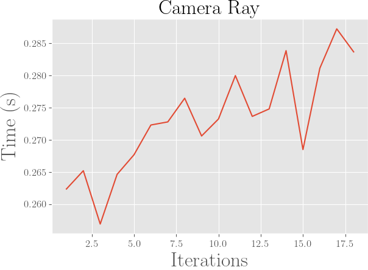
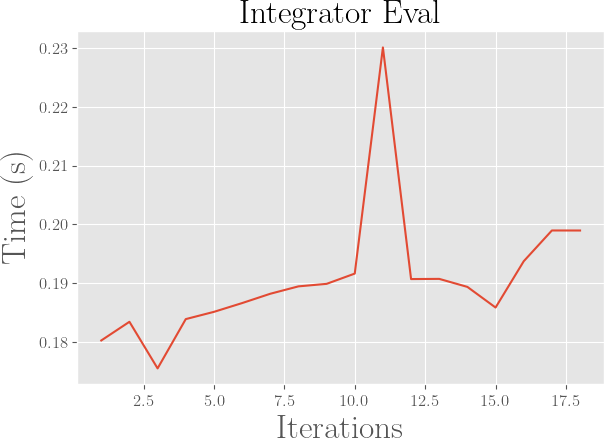
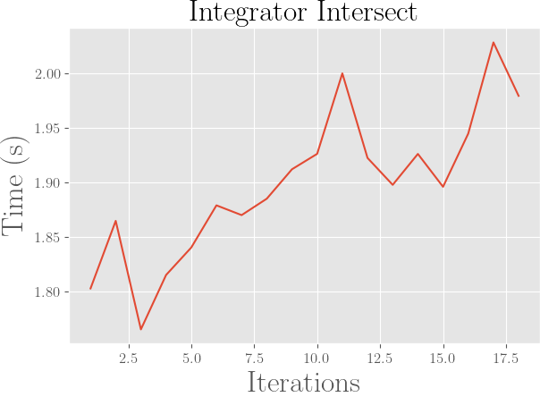
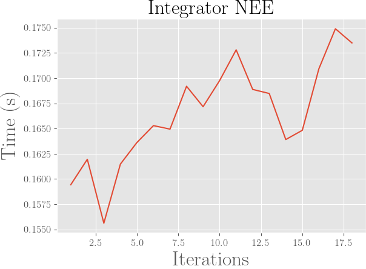
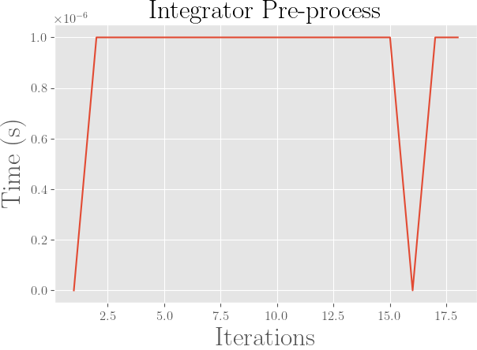
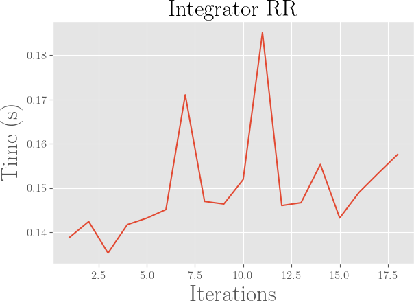
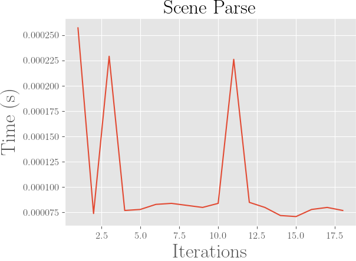
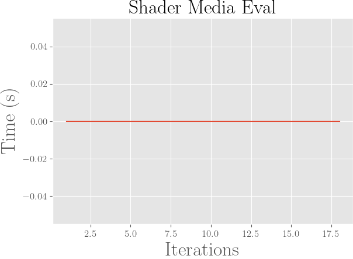
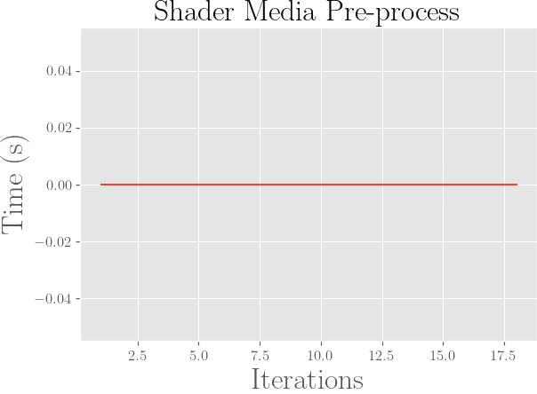
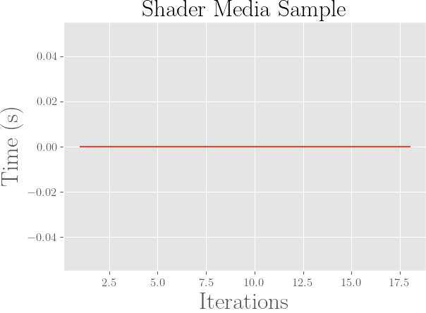
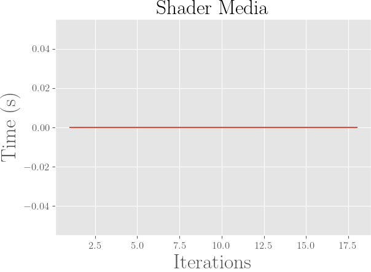
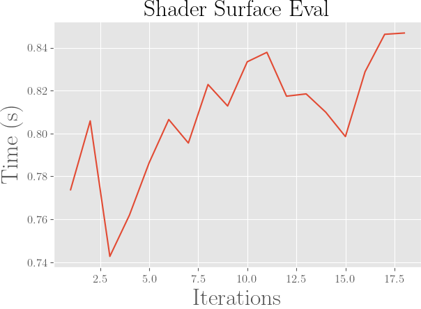
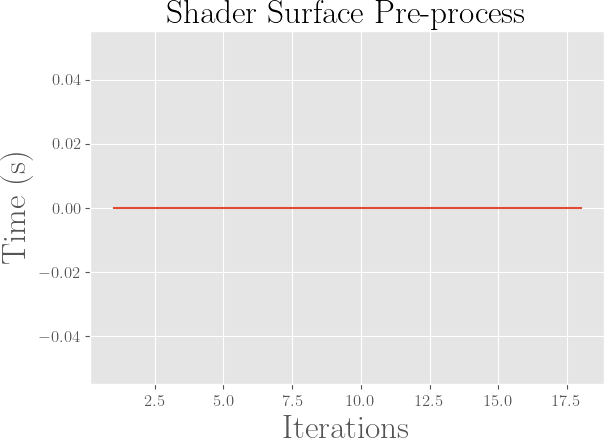
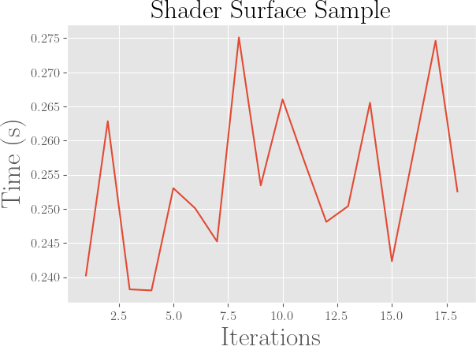
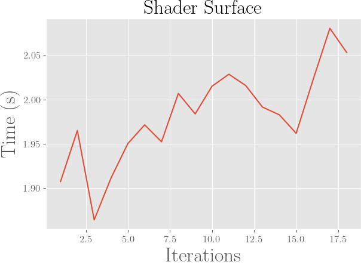
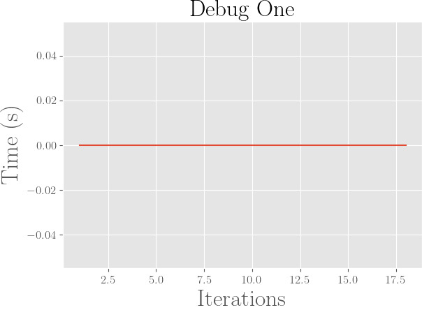
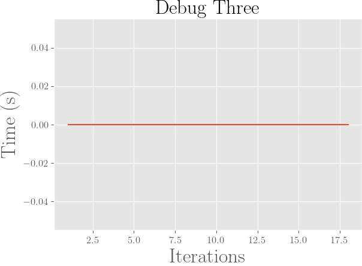
Contact Me
==========
If there are any questions please feel free to email me at zack441@mac.com